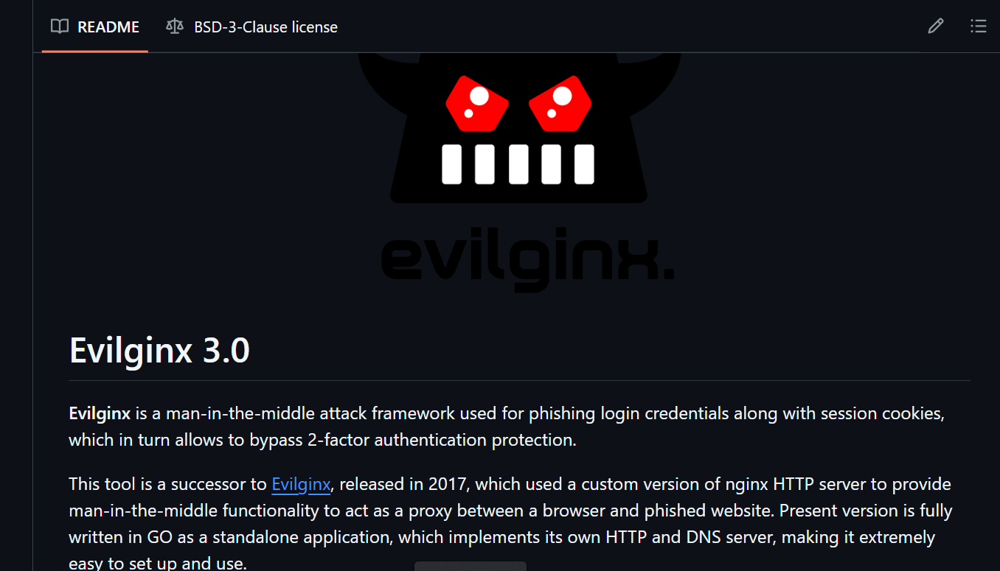
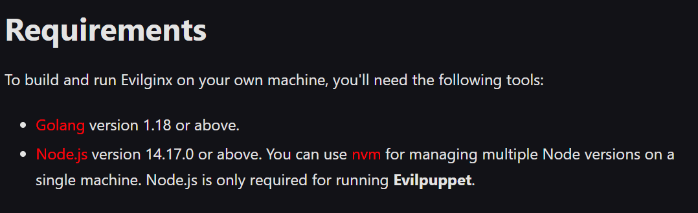
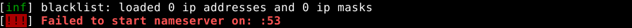

Tehtävä h5, mininet
Tutustu työkaluun
- Evilginx 3.0 on työkalu tietojenkalasteluun (phishing) ja man-in-the-middle hyökkäyksiin. Evilginx kykenee myös ohittamaan kaksiosaisen tunnistautumisen.
Ladataan evilginx
Tutkin evilginx:n sivua, josta pienen etsinnän jälkeen löytyi ohjeet.
Ohjelmistosta on olemassa pro-versio, joka on ilmeisesti maksumuurin takana.
Löysin kuitenkin ohjeet ilmaisversioon, jossa neuvottiin kuinka rakentaa itse evilginx. (Building evilginx)
Koska halusin hoitaa helpomman ensin altapois, tarkistin onko koneella node.js

Nodea ei löytynyt, joten ladataan se. Latasin myös nvm helpottamaan ylläpitoa:

Seuraavaksi node:

Seuraavaksi golang:

Seuraavaksi yritin buildata itse työkalua. Kloonasin repon ja loin sinne phislets hakemiston. Törmäsin tähän virheeseen kuitenkin toistuvasti:
Mininet
Sain ladattua ja aukaistua mininetin, lähdin suorittamaan ohjeiden mukaan tehtävää.


Mutta sitten törmäsin tähän ongelmaan xtermin kanssa, enkä päässyt siitä yli kalvosetissä olleella vinkilläkään.

Tässä vaiheessa minulta loppui aika ja osaaminen kesken, joten tehtävä palautettu osin keskeneräisenä.
Lähde
Building evilginx: https://help.evilginx.com/community/getting-started/building
Kurssi sivut Verkkoon tunkeutuminen ja tiedustelu: https://hhmoodle.haaga-helia.fi/course/view.php?id=44093§ion=0#tabs-tree-start